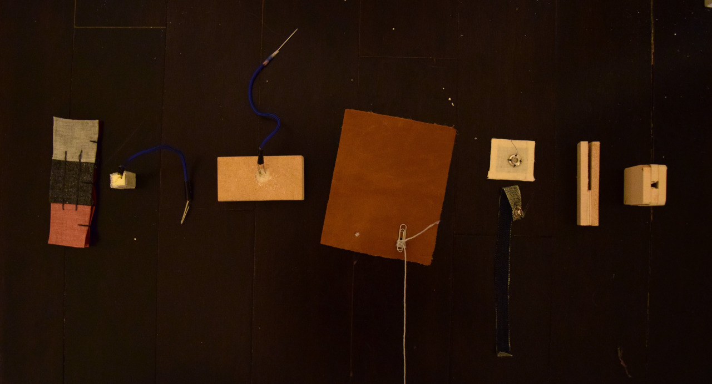

I believe that uncovering the materiality of technological objects, by drawing back the curtain of the interface, screens and opaque cold materials, has the potential to create spaces that imply tactile causality and a networked responsibility. My work responds to current discussions within design and technology, digital humanities, media archaeology, and tactile technology.
//Tune in this summer for the updated version of this project.